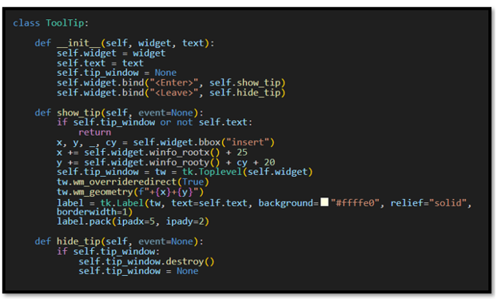
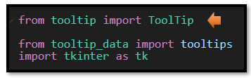

~2 The ToolTip Class~
12/1/2025
The Tool Tip Class
The Tool Tip class is a class inside of your project. And you can sort of think of a class, like a factory. You describe the object that you want to make inside of the class, and then you can stamp out as many of these things as you want to make, you have the blueprint for your new thing right there in that little class factory. Every time you stamp out a new object, it is called instantiation, and you are creating a new instance of that class. Or a new object for the class. In our case we want a tool tip. And our class is going to create the basic recipe for any type of tooltip.
How do we start writing a class?
The first line is a little different, because you want to say class with a small letter ‘c’, and then you can make up the name for the class. In our case the class name will be ToolTip. Oh, and then you end that line with a colon.
What is a Constructor Method?
You might notice something else strange about a class. Inside a class you will find right up at the top of it, is the constructor method.
The __init__ Dunder
The first thing that you will notice in the first method, or constructor, is that it is using __init__, The term __init__, stands for initialize. So, it is a special method that runs automatically whenever, you create a new instance of a class. It starts this thing going. You can actually write a function without the constructor, but you would not be able to save anything, it doesn’t remember anything, and you would probably only do this if you used something simple like a print statement, that doesn’t really need a class and pretty much runs itself. __init__ belongs to a very limited naming convention, very few things actually belong to this group and using the double underscores at the front and the back of the name is called a ‘dunder” method.
How does __init__ use self?
self is a reference to the instance that the class creates. It then takes self, and latches on to everything that it needs using the dot operator as a type of connector. Once we use that dot, we have access to any of the attributes and methods that belong to an object.
What does a Constructor Typically Do?
Even though a constructor can handle other duties, it typically handles a small list of responsibilities.
1. Define attributes
2. Wires up basic behavior (like bind)
3. Call setup methods (e.g., self.create_widgets())
This keeps the constructor readable and makes your class easier to test and extend.
What is an Attribute?
We’ve already met methods—those special functions tucked inside a class. But what about attributes? Attributes are like the personal belongings of an object, stored safely inside its backpack. They’re variables, yes, but with a twist: each one is prefixed with self.
Why self? Because when a class is used to create an object, self becomes a reference to that specific object. So when you write self.text, you’re saying, “This object should carry its own version of text.” It’s not a copy of the class—it’s a personalized instance, and self makes sure each object knows which attributes belong to it.
In short:
self is the object speaking for itself.
self.attribute means “this object’s version of that variable.”
Attributes are how objects remember things—like names, settings, or tooltip text.
The Parameter List
Now look at your parameter list. Or rather what is inside of the parenthesis in the constructor method.
self, needs to always be the first value in the parameter list inside of a class. But you will notice something strange here too. You, are only giving two extra parameters after the value of self; but if you look under the definition line, you will notice that there are three attributes: text, tip_window, and widget. Why isn’t tip_window also included in the parameter list? The reason you do not need to place it inside of the list is because the tip_window attribute, is only being used within the class it self. You can sort of think of the other two parameters as questions, that the class is asking from the object that is calling it. With a tooltip, the object that would call it would be anything on the form that you want to attach a tool tip to. This could be a button, a label, or anything else that could use a tool tip. So, the class, in order to make a custom tool tip needs to know two things: Who are you? and what do you want to say? And the widget will answer those questions in its argument list.
What does a class have access to?
A lot of the time in programming, you need to define all of your variables above, where it is mentioned. But if you look at the last two lines in the constructor method, you will see that it is mentioning show_tip, and hide_tip. Those two methods have not been defined yet, but the constructor is not throwing an error when it mentions them.
A class is different in the way that it runs. When Python encounters a class block, it doesn’t execute until it had read the entire recipe. So, the constructor knows about itself and everything that is inside of it. You do not need to define any parts of it, above it.
1. Parses (reads the data)
2. Creates the class object with all its methods and attributes
3. The class is instantiated when something calls it, it is at that time that it runs the __init__ constructor method.
What is Bind?
If you have a custom event, you are going to have to bind it. If you want your event to do something, you are going to have to use the word ‘bind.’
You don’t need bind when the widget already has a built-in option like command= (e.g., Button, Checkbutton, Menu).
my_button = tk.Button(root, text="Click Me", command=do_something)
What is a Method?
Now one of the first things that you will notice about the ToolTip class is that it is filled with a bunch of functions. Except they are not functions. Because inside of a class, they are called methods. A function is a self-contained block of code that performs a task. But a method is a special type of function, it is inside of a class, and it is able to interact and make changes to the instances of that class.
What’s Better Left to Methods
Constructors are great but, Methods are where the real magic happens—especially when:
1. You need reusable logic (e.g., show_tip, hide_tip)
2. You want to respond to events
3. You’re performing actions that aren’t part of initial setup
4. You’re separating concerns (e.g., layout vs. behavior vs. data)
This separation of duty, can really organize the jobs, each part of your code is doing.
The Class Code
You can put this code into a file named tooltip.py
Then go to your main.py file and import it.
#Contains the TooTip class (your core tooltip logic)
import tkinter as tk
class ToolTip:
def __init__(self, widget, text):
self.widget = widget
self.text = text
self.tip_window = None
self.widget.bind("<Enter>", self.show_tip)
self.widget.bind("<Leave>", self.hide_tip)
def show_tip(self, event=None):
if self.tip_window or not self.text:
return
x, y, _, cy = self.widget.bbox("insert")
x += self.widget.winfo_rootx() + 25
y += self.widget.winfo_rooty() + cy + 20
self.tip_window = tw = tk.Toplevel(self.widget)
tw.wm_overrideredirect(True)
tw.wm_geometry(f"+{x}+{y}")
label = tk.Label(tw, text=self.text, background="#ffffe0", relief="solid", borderwidth=1)
label.pack(ipadx=5, ipady=2)
def hide_tip(self, event=None):
if self.tip_window:
self.tip_window.destroy()
self.tip_window = None
Ok, well this was quite an in depth tutorial on the class, and I hope you were actually able to get something out of it. Next week, we will be looking at those two methods that are inside of the class. So, you will not want to miss that lesson, or your poor Tool tip might start, but it would certainly have no where to go.